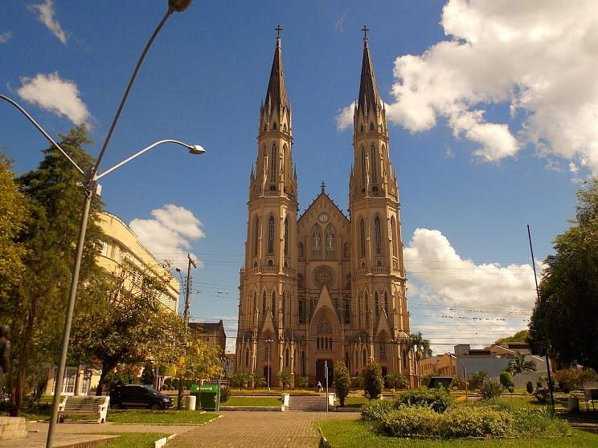
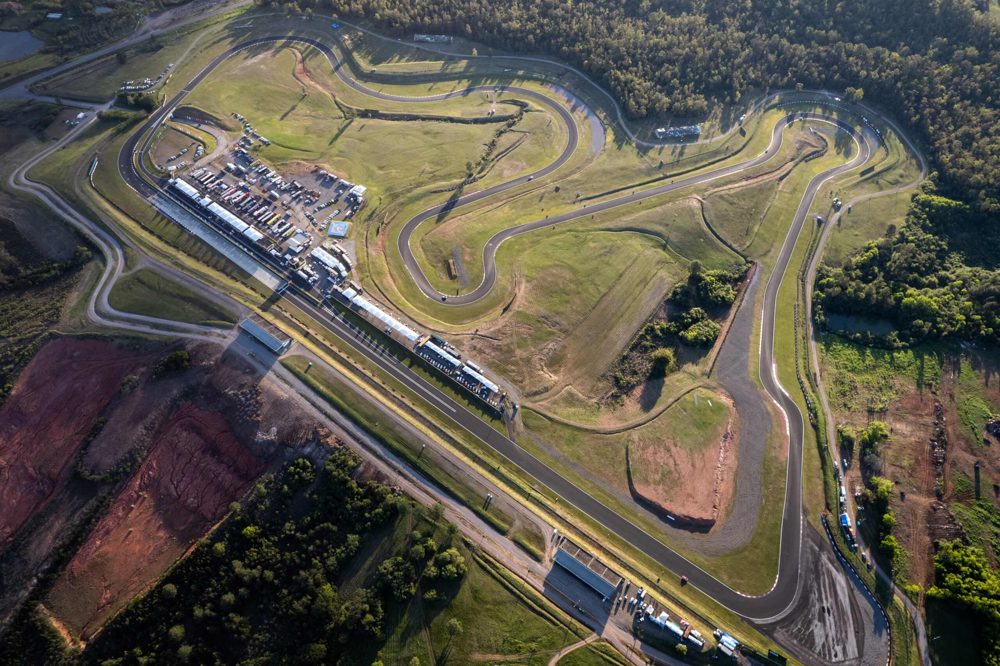
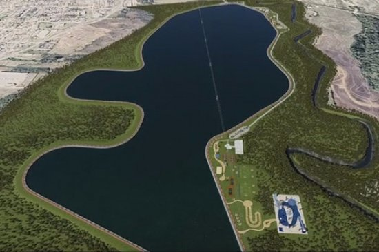

Catedral São João Batista
A Catedral São João Batista, em Santa Cruz do Sul, teve sua primeira capela construída entre 1855 e 1863 por Guilherme Lewis, com o Pe. Manoel Braga como primeiro pároco. A atual construção neogótica, projetada por Simão Gramlich e liderada por Ernesto Matheis, foi erguida entre 1928 e 1936, e concluída em 1977.

Autódromo
A cidade de Santa Cruz do Sul abriga o Autódromo Internacional de Santa Cruz do Sul, localizado no km 102 da rodovia RS-471, anexo ao Parque de Eventos. Inaugurado em 2005, é considerado um dos circuitos mais seguros e modernos do Brasil, recebendo categorias como a Stock Car e a Fórmula Truck.

Parque da Oktoberfest
O Parque da Oktoberfest, localizado no centro de Santa Cruz do Sul (RS), é um complexo de 14 hectares que serve como o principal polo cultural e esportivo do município. Tombado como patrimônio histórico e cultural da cidade, o local sedia anualmente a tradicional Oktoberfest, além de grandes eventos como a Festa das Cucas e o Enart.

Lago Dourado
O Lago Dourado (oficialmente Lago Prefeito Telmo Kirst) é o principal complexo de lazer e preservação ambiental de Santa Cruz do Sul, RS. Além de garantir o abastecimento de água da cidade, o local é o destino ideal para atividades ao ar livre, cercado por natureza e muito ar puro.